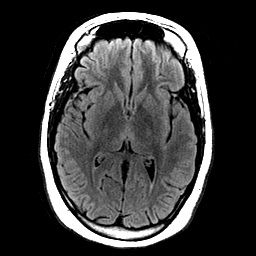
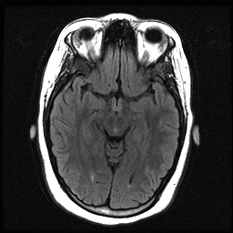
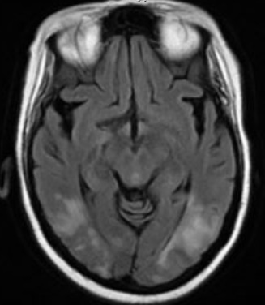
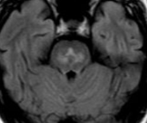

( of )
Correct: 0
Incorrect: 0
A 33 year old woman is brought to the emergency department with a history of recent confusion and frequent falls in the past week. She underwent bariatric surgery two months ago for morbid obesity. Blood pressure is 170/100. Temperature in normal. Your examination shows difficulty with recent memory, impaired tandem gait, saccadic pursuit in all gaze directions, and the abnormalities shown in this video.
What is the likely cause of these abnormalities?
Incorrect
Incorrect
Correct!
and mammillary bodies.
These MRI abnormalities are specific for Wernicke encephalopathy, but a negative MRI occurs in at least 50% of cases. Blood tests (whole blood thiamine, erythrocyte transketolase, and thiamine pyrophosphate levels), which should be drawn before administering thiamine, can help confirm the diagnosis, but may also be normal. So, whenever you see this kind of nystagmus after bariatric surgery or with a history of binge drinking, the presumptive diagnosis is Wernicke encephalopathy! The other answer choices here are reasonable, but less apt. Infectious meningoencephalitis is always an important consideration, eliciting further prompt evaluation with imaging, lumbar puncture, and other studies. Hypertensive encephalopathy, which typically manifests with homonymous visual field loss, cognitive impairment, and seizures, discloses high T2/FLAIR MRI signal in the posterior cerebral hemispheres ("posterior reversible encephalopathy syndrome, or PRES"),
and does not typically cause nystagmus. Osmotic demyelination syndrome (formerly called “central pontine myelinolysis”) occurs after rapid correction of hyponatremia usually following heavy alcohol intake. The increase in extracellular sodium results in rapid escape of intracellular water and cellular dysfunction, most often affecting the pons. Patients present with impaired consciousness and quadriparesis. MRI should show symmetrical high T2/FLAIR sign in the central pons
and sometimes in the lateral geniculate bodies.




You are looking at gaze-evoked horizontal jerk nystagmus on side gaze and upbeat nystagmus on upgaze. This form of nystagmus is a common feature of Wernicke encephalopathy, a deficiency of thiamine (vitamin B1), which is a co-factor in many metabolic pathways critical to central nervous system function. The classic clinical triad consists of a confusional state, ataxia, and ophthalmoplegia, but only a minority of patients have all three components. Nystagmus is actually more common than ophthalmoplegia (reduced gaze and abduction deficits). So look for nystagmus, even when no other neurologic manifestations are present. In the past, the common setting for Wernicke encephalopathy was alcohol binge drinking, but with the growth of bariatric surgery, it is seen in those patients, especially if they are not adherent to vitamin supplementation regimens. This patient had been vomiting and could not afford the cost of her vitamins. The manifestations of Wernicke encephalopathy usually develop between 4 to 8 weeks after surgery. Treatment is prompt administration of thiamine 500 mg intravenously three times a day for 3 days, followed by thiamine 250 mg intravenously or intramuscularly once daily for 5 days to prevent permanent amnestic dementia (Korsakoff syndrome). The ophthalmic manifestations often resolve within days of treatment, but ataxia and cognitive impairment often endure. The neuropathology consists of capillary proliferation, microhemorrhages, and neuronal and glial loss. It is prominent in the thalamus, mammillary bodies, and periventricular regions of the brainstem, including the sixth nerve nuclei. In this patient, T2 and FLAIR MRI sequences showed high signal in the dorsomedial thalamus
Incorrect